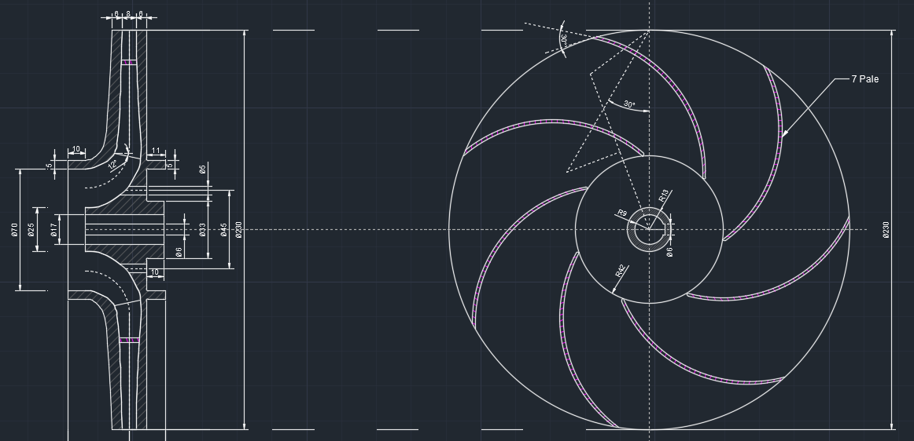

Project of a centrifugal pump
[Sizing the impeller of a centrifugal pump (for flow rate and head data) using Excel tool: - Feasibility study; - Hub and shaft diameter sizing; - Sizing of inlet port (to improve cavitation behaviour or to maximise efficiency); - Setting up and drawing the meridian duct; - Blade design in the impeller; - Circumferential view design; - Life cycle cost;]
📎 Scarica file del progetto